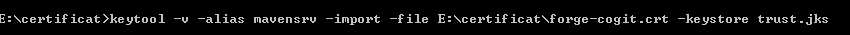
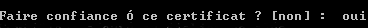
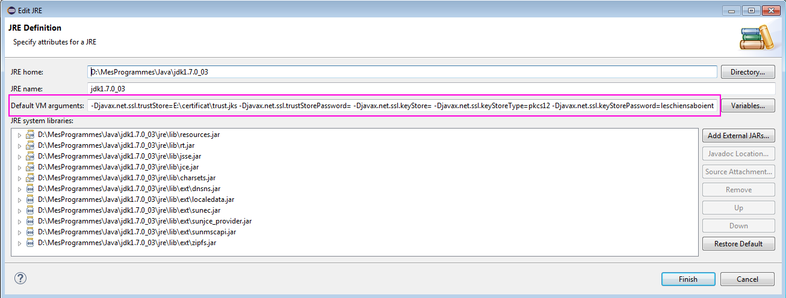
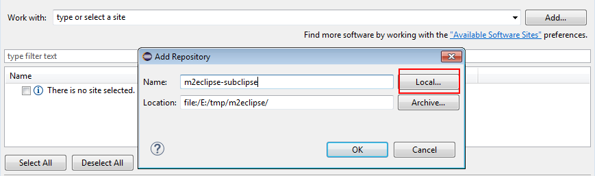

Installation des outils pour GeOxygene
Cette page a pour objectif de guider le développeur dans son installation de la plateforme de développement de GeOxygene.
Note
A compter de ce jour (à partir de la version 1.9-SNAPSHOT), la version Java 1.8 est obligatoire.
Eclipse en version >=Mars est recommandé avec les plugins subclipse (>1.10.8) et m2 (>1.5.0), sachant que le plugin m2 est déjà installé à partir d’Eclipse Mars.
Attention : le connector subclipse pour Maven doit être installé à la main comme indiqué plus bas et non pas via le marketplace
JAVA
GeOxygene est un projet Open Source écrit en JAVA, il faut donc l’installation d’un JDK.
Installation
Télécharger cet environnement sur le site de Sun à l’adresse suivante :
http://www.oracle.com/technetwork/java/javase/downloads/index.html
Cliquer sur l’exécutable et accepter l’accord de licence. Par défaut l’installation s’est faites dans :
C:\Program Files\Java\jdk1.8.0\
Certificate
Il faut définir certaines propriétés afin de pouvoir télécharger les librairies java depuis un serveur HTTPS.
La référence de cette approche est détaillée ici : http://maven.apache.org/guides/mini/guide-repository-ssl.html.
- Obtention du certificat
Télécharger le certificat depuis votre navigateur comme ceci :
1.1 Ouvrir votre navigateur et aller sur la page :
1.2 Dans la barre de navigation, cliquer sur le cadenas
1.3 Cliquer sur “More informations”
1.4 Cliquer sur “Display certificate”
1.5 Cliquer sur “détails”
1.6 Cliquer sur “Export”
- 1.7 Sauvegarder votre certificat sur votre disque dur.
- Par exemple : E:\certificat\forge-cogit.crt
Warning
- Le nom du fichier doit être forge-cogit.crt (et non pas forge-cogit.ign.fr.crt)
- Sous Linux, définissez le chemin en absolu (ne pas utiliser ~/certificat/forge-cogit.crt)
{kind=link}
Figure 1 : Téléchargement du certificat
La ligne de commande suivante va importer le certificat d’autorité dans un fichier trust.jks.
keytool -v -alias mavensrv -import -file E:\certificat\forge-cogit.crt -keystore trust.jks
Figure 2 : Importer le certificat dans un trust store
Saisir un mot de passe, par exemple “leschiensaboient”
Accepter le certificat
{kind=link}
Figure 3 : Accepter le certificat
{kind=link}
- Les variables d’environnement vont être définies plus tard (Eclipse preferences >> JDK).
Refaire la même chose (sauvegarder le certificat depuis le navigateur, et l’importer dans le fichier trust.jks précédemment crée) avec
en changeant le nom de l’alias, par exemple :
keytool -v -alias mavenHttps -import -file E:\certificat\repo.maven.apache.org.crt -keystore trust.jks
et en entrant le mot de passe précédemment défini (ici c’était “leschiensaboient”)
Eclipse installation
L’environnement de développement utilisé est celui d’Eclipse, éditeur très largement utilisé aujourd’hui pour les développements JAVA.
Installation
- Vous pouvez télécharger Eclipse Mars(4.5.2), directement à partir des liens ci-dessous :
| Windows 32-bit |
| Windows 64-bit |
| Mac OS X(Cocoa 64) |
| Linux 32-bit |
| Linux 64-bit |
Décompresser le fichier téléchargé (Eclipse ne fournit pas d’installeur, juste un répertoire à dézipper).
Lancer Eclipse :
Windows : eclipse.exe
Linux : ./eclipse
Lors du premier lancement, une boite de dialogue vous demandera de sélectionner le répertoire racine de vos projets Eclipse. Soit vous sélectionnez celui proposé, auquel cas il sera créé ou, vous pouvez en choisir un personnalisé.
Eclipse preferences
JDK
- Configurer Eclipse pour qu’il exécute les programmes java avec un jdk et non pas un jre :

Figure 4 : Java configuration in Eclipse
- Définir les variables d’environnement permettant de télécharger les librairies java depuis un serveur https.
Toujours dans :
Sélectionner le JDK utilisé par défaut et cliquer sur Edit. Ajouter la ligne suivante dans Default VM arguments en spécifiant bien le répertoire où vous avez créé le fichier trust.jks et en remplaçant leschiensaboient par votre mot de passe.
-Djavax.net.ssl.trustStore=E:\certificat\trust.jks -Djavax.net.ssl.keyStorePassword=leschiensaboientFigure 5 : Variables d’environnement
{kind=link}
Proxy
Pour installer des mises à jour, de nouveaux plugins ou des extensions, il faut qu’Eclipse puisse accèder à internet pour pouvoir les télécharger. Si vous êtes derrière un proxy, il vous faut configurer Eclipse afin qu’il en tienne compte.
Pour ce faire, accéder au menu :
Vous pouvez alors séléctionner Manual comme Active Provider

Figure 6 : Eclipse - Network connections
Selectionner “HTTP” dans la liste des entrées et cliquer sur le bouton “Edit”.
Entrer les coordonnées de votre proxy. Pour l’IGN par exemple, il s’agit de proxy.ign.fr avec le port 3128. Ne remplisser pas les champs d’authentification.
Faire la même chose pour “HTTPS” comme indiqué sur la figure 7.
Figure 7 : Edit proxy entry
Encodage
Tous les modules de GeOxygene doivent être encodés en UTF-8. Pour ce faire, dans Eclipse, aller dans :
et choisir UTF-8.
{kind=link}
Figure 8 : Eclipse - Encodage
Code formatting
Parce qu’on passe plus de temps à lire du code qu’à en écrire, il faut configurer dans Eclipse la convention de programmation adoptée dans GeOxygene. Elle s’inspire avant tout de la convention de programmation recommandée pour tous les développements JAVA. Cette norme est dérivée de celle proposée par SUN à l’adresse :
- Télécharger la norme du COGIT :
Aller dans :
- Preferences >> Java
>> Code Style >> Formatter
et cliquer sur “Import” :

Figure 9 : Convention de codage - Import
- Importer ce fichier et choisissez comme “Active profile” :
“Java COGIT Formatting Conventions v1”

Figure 10 : Convention de codage - Active profile
Text editors
- Aller dans :
- Cocher :
- Insert spaces for tabs
- Check Show line numbers

Figure 11 : Eclipse preferences - Text editors
Eclipse Plugins
Maintenant, Eclipse est prêt pour l’installation des plugins nécessaires à GeOxygene.
Vous aurez besoin essentiellement des plugins EGit, Subversion (subclipse) et Maven (m2eclipse) ainsi que de ses connecteurs pour git et svn.
À partir d’Eclipse Mars, il ne reste qu’à installer éventuellement Subclipse (si on accès au SVN privé du COGIT), ainsi que les connecteurs m2e pour Subclipse et EGit.
Connector EGit for Maven
Pour installer le connector EGit on pourra faire dans le menu d’Eclipse
Puis dans la fenêtre qui s’ouvre
Faire “Next”

Figure 25 : Import
{kind=link}
Figure 26 : m2e Marketplace
{kind=link}
Figure 27 : m2e-egit connector
Si SVN n’est pas utilisé, on pourra passer à la partie suivante, Maven Preferences
Plugin Subclipse (optionnel pour la partie publique de GeOxygene)
Subclipse est un plugin Eclipse permettant d’utiliser Subversion (SVN) directement depuis votre éditeur préféré.
Etape 1 : Cliquer dans le menu d’Eclipse :
Help >> Eclipse Marketplace ...
- dans la zone de recherche, saisir subclipse
- clicker sur go afin de rechercher le plugin
- dans la liste des plugins, clicker sur install du plugin Subclipse 1.10.13 (au moment de l’écriture de cette doc)
{kind=link}
Figure 12 : Subclipse 1.10.8 in Marketplace
{kind=link}
Figure 13 : Confirm Selected Features
{kind=link}
Figure 14 : Review Licenses

Figure 15 : Security warning
Etape 5 : Une fois l’installation terminée, préférer “Restart Now” dans la prochaine boite de dialogue.
Le plugin subeclipse sera opérationnel après le redémarrage d’Eclipse.

Figure 16 : Restart
Etape 6 : Une fois le plugin installé, configurer dans Eclipse l’interface SVNKit. En effet, celle-ci semble mieux fonctionner que celle par défaut (JavaHL). Pour cela, dans le menu d’Eclipse :
sélectionner l’interface SVNKit.
{kind=link}
Figure 17 : SVN interface
Connector Subclipse for Maven (optionnel pour la partie publique de GeOxygene)
Il faut installer le connector subclipse pour Maven si on veut pouvoir importer directement le code du SVN privé du COGIT depuis Eclipse.
Attention : le connector n’est pas à jour dans le catalogue du Marketplace d’Eclipse.
Télécharger le fichier suivant et décompresser-le dans un répertoire sur votre disque local.
Dans Eclipse :
Dans le menu d’Eclipse, aller à :
Help >> Install New Software

Figure 22 : Install new Software
Cliquer sur Add ...

Figure 23 : Add new update site
Cliquer dans la boite de dialogue sur Local ... et choisir le répertoire où a été dézippé le fichier téléchargé précédement.
Figure 24 : Add new local site
Cliquer sur OK, cocher le composant à installer et finir l’installation comme habituellement (securité, licenses, ...).
{kind=link}
Maven preferences
Eclipse Preferences for Maven
Afin de voir la javadoc ou les sources des dépendances de vos projets, sélectionner :
- Download Artifact Sources
- Download Artifact Javadoc

Figure 29 : Eclipse preferences pour Maven
Tout est en place pour l’installation de GeOxygene.
Settings
Si vous êtes derrière un proxy, la dernière étape consiste à configurer Maven pour utiliser le proxy. Pour ce, il faut ajouter un fichier settings.xml à la racine de Maven (même niveau que le repository maven). Ce répertoire est situé à l’endroit suivant :
PLATFORM LOCAL REPOSITORY Windows XP: C:\Documents and Settings\Augusta\.m2\Windows: C:\Users\Augusta\.m2\Linux and Mac: ~/.m2/
Voici un exemplaire d’un fichier settings.xml que vous pouvez utiliser à l’IGN :
<settings xmlns="http://maven.apache.org/SETTINGS/1.0.0"
xmlns:xsi="http://www.w3.org/2001/XMLSchema-instance"
xsi:schemaLocation="http://maven.apache.org/SETTINGS/1.0.0
http://maven.apache.org/xsd/settings-1.0.0.xsd">
<interactiveMode>true</interactiveMode>
<usePluginRegistry>false</usePluginRegistry>
<offline>false</offline>
<proxies>
<proxy>
<active>true</active>
<port>3128</port>
<host>proxy.ign.fr</host>
<nonProxyHosts>localhost</nonProxyHosts>
</proxy>
</proxies>
<profiles>
<profile>
<id>cogit</id>
<activation>
<activeByDefault>true</activeByDefault>
</activation>
</profile>
</profiles>
</settings>